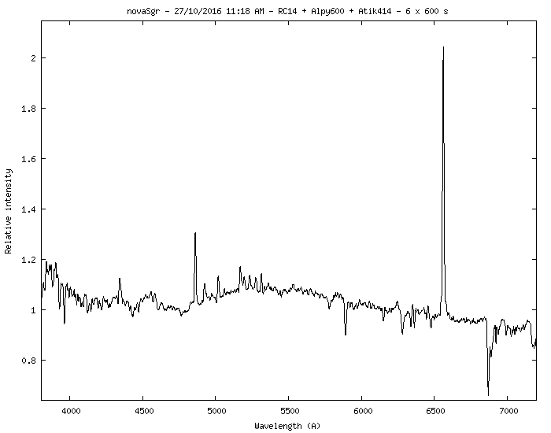
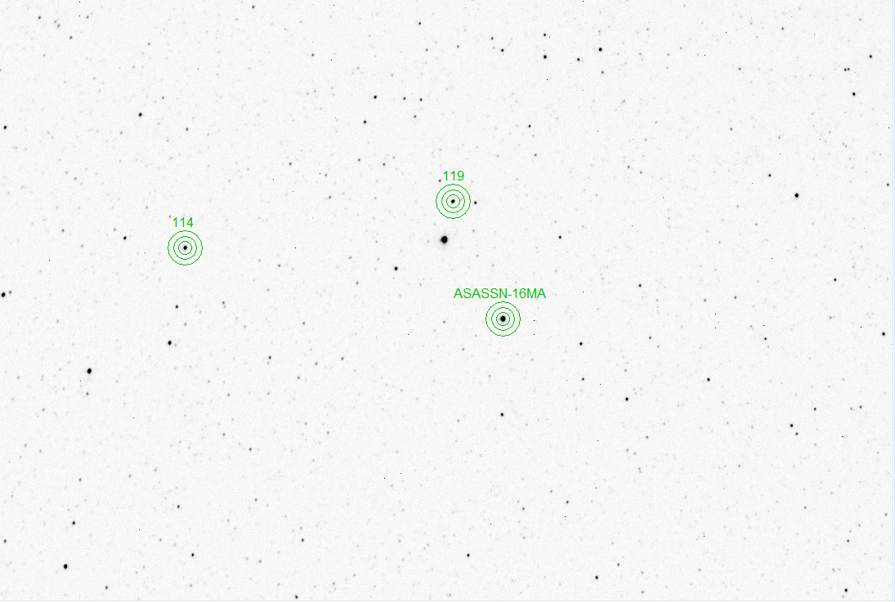

A second nova this week, confirmed in a spectrum taken with the target setting in the western sky on October 27. The ATel (also kindly prepared by Steve Shore) can be found here: (ATel #9678). A follow up ATel hinting to the nova's progenitor can be found here. 

Additional spectra can be found at the ARAS web site.
Photometry acquired on November 30 shows a v-mag of 9.766. See the ASASSN-16MA page at AAVSO for additional photometry.
